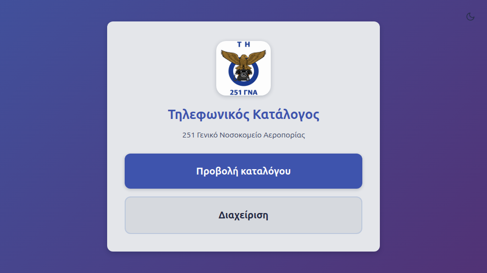
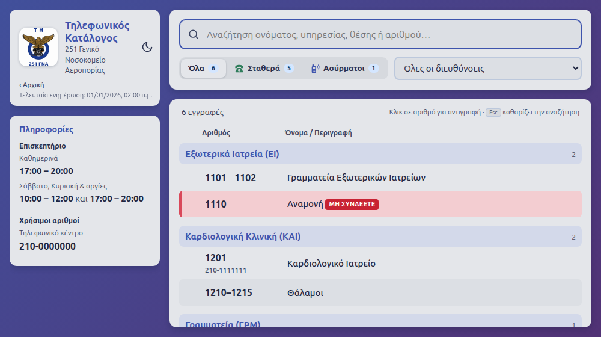

Σύντομος οδηγός για τη χρήση και τη διαχείριση του καταλόγου.
1. Τι είναι και πώς ανοίγει
Το πρόγραμμα βρίσκεται στον κοινό φάκελο, μαζί με τα αρχεία του καταλόγου. Δεν χρειάζεται εγκατάσταση.
Ανοίξτε τον κοινό φάκελο και κάντε διπλό κλικ στο «Τηλεφωνικός Κατάλογος».
Την πρώτη φορά, τα Windows μπορεί να δείξουν το μήνυμα «Τα Windows προστάτευσαν τον υπολογιστή σας». Πατήστε «Περισσότερες πληροφορίες» και μετά «Εκτέλεση οπωσδήποτε».
Εμφανίζεται η αρχική οθόνη με δύο κουμπιά: «Προβολή καταλόγου» και «Διαχείριση».
2. Προβολή καταλόγου
Πατήστε «Προβολή καταλόγου».
Γράψτε στο πεδίο αναζήτησης ένα όνομα, μια υπηρεσία ή έναν αριθμό. Τα αποτελέσματα εμφανίζονται αμέσως.
Με τις καρτέλες «Όλα», «Σταθερά» και «Ασύρματοι» βλέπετε μόνο τον τύπο που θέλετε. Με το αναδυόμενο μενού δίπλα τους βλέπετε μία μόνο διεύθυνση.
Κάντε κλικ πάνω σε έναν αριθμό για να αντιγραφεί.
Οι γραμμές με κόκκινο χρώμα και την ένδειξη «ΜΗ ΣΥΝΔΕΕΤΕ» είναι τηλέφωνα στα οποία δεν πρέπει να μεταφέρονται κλήσεις.
Ο κατάλογος ανανεώνεται μόνος του όταν κάποιος κάνει αλλαγές, δεν χρειάζεται να ξανανοίξετε το πρόγραμμα.

Αρχική οθόνη

Προβολή καταλόγου (δείγμα με υποθετικά στοιχεία)
3. Διαχείριση: είσοδος
Στην αρχική οθόνη πατήστε «Διαχείριση».
Την πρώτη φορά το πρόγραμμα ζητά να ορίσετε κωδικό (τουλάχιστον 4 χαρακτήρες). Γράψτε τον δύο φορές και πατήστε «Ορισμός κωδικού». Φυλάξτε τον κωδικό σε ασφαλές μέρος.
Τις επόμενες φορές γράψτε τον κωδικό και πατήστε «Είσοδος».
Όταν τελειώσετε, πατήστε «Έξοδος». Από εδώ μπορείτε επίσης να αλλάξετε κωδικό («Αλλαγή κωδικού»).
Κάθε αλλαγή που κάνετε αποθηκεύεται αμέσως και φαίνεται σε όλους. Δεν υπάρχει κουμπί «Αποθήκευση όλων».
4. Τηλέφωνα: προσθήκη, αλλαγή, διαγραφή
Στην αριστερή στήλη επιλέξτε τη διεύθυνση (π.χ. ΕΙ, ΚΑΙ). Στα δεξιά εμφανίζονται τα τηλέφωνά της.
Νέο τηλέφωνο: πατήστε «+ Νέο τηλέφωνο», επιλέξτε τύπο (Σταθερό ή Ασύρματο), γράψτε τους αριθμούς (χωρισμένους με κόμμα, ή σειρά όπως 5501-5511), το όνομα ή την περιγραφή και πατήστε «Αποθήκευση».
Αλλαγή: κάντε κλικ στη γραμμή του τηλεφώνου, διορθώστε και πατήστε «Αποθήκευση».
Διαγραφή: ανοίξτε το τηλέφωνο, πατήστε «Διαγραφή» και επιβεβαιώστε.
«Μη συνδέετε»: στη στήλη «Μη συνδέετε» πατήστε το κουμπί της γραμμής για να το ενεργοποιήσετε ή να το απενεργοποιήσετε. Το τηλέφωνο εμφανίζεται κόκκινο στον κατάλογο.
5. Διευθύνσεις (ΕΙ, ΚΑΙ, …): προσθήκη, μετονομασία, διαγραφή
Νέα: πατήστε «+ Νέα διεύθυνση», γράψτε το όνομα και τη συντομογραφία (π.χ. ΕΙ) και πατήστε «Αποθήκευση».
Μετονομασία: επιλέξτε τη διεύθυνση, πατήστε «Επεξεργασία διεύθυνσης», αλλάξτε το όνομα και πατήστε «Αποθήκευση».
Διαγραφή: στο ίδιο παράθυρο πατήστε «Διαγραφή διεύθυνσης». Δεν διαγράφεται όσο έχει ακόμη τηλέφωνα: μετακινήστε ή διαγράψτε πρώτα τα τηλέφωνά της.
6. Εκτύπωση
Μέσα στη Διαχείριση πατήστε «Εκτύπωση».
Ανοίγει λίστα με όλα τα τηλέφωνα ανά διεύθυνση. Πατήστε το κουμπί εκτύπωσης της σελίδας και επιλέξτε εκτυπωτή (ή «Αποθήκευση ως PDF»).
7. Αν κάτι πάει στραβά
«Κάποιος άλλος άλλαξε τον κατάλογο…» Δύο διαχειριστές άλλαζαν τον κατάλογο την ίδια στιγμή και η τελευταία σας αλλαγή δεν αποθηκεύτηκε. Το πρόγραμμα φορτώνει τη νεότερη έκδοση· κάντε ξανά την αλλαγή σας.
Λάθος ή διαγραφή κατά λάθος: το πρόγραμμα κρατά αυτόματα αντίγραφα ασφαλείας στον φάκελο backup, δίπλα στο πρόγραμμα. Μην τα πειράξετε· για επαναφορά επικοινωνήστε με την τεχνική υποστήριξη.
Ξεχάσατε τον κωδικό: επικοινωνήστε με την τεχνική υποστήριξη.
Για οτιδήποτε άλλο, επικοινωνήστε με την τεχνική υποστήριξη και πείτε τι μήνυμα εμφανίστηκε.